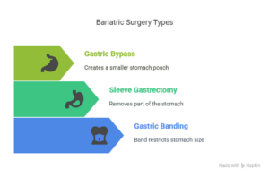

If you are struggling with obesity and have considered bariatric surgery, you might find yourself wondering, What are the three types of bariatric surgery? Understanding the different types of bariatric procedures can help you decide which one might be right for you. As a Leading Bariatric Surgeon in Delhi NCR, I have helped many patients navigate through this decision and understand how each surgery works, its benefits, and how it can help you lead a healthier, more fulfilling life.
In this blog, I will break down the three main types of bariatric surgery, explain how they work, and share insights into how they can change your life for the better.
Start Your Weight Loss Journey with Dr. Atul Peters!
Book Your Appointment
What is Bariatric Surgery?
Before diving into what are the three types of bariatric surgery, let me briefly explain what bariatric surgery is. Bariatric surgery is a surgical procedure designed to help people who are severely overweight or obese, lose weight. These surgeries involve making changes to the digestive system, either by reducing the stomach’s capacity, altering the digestive tract, or a combination of both. The goal of bariatric surgery is not only to reduce the amount of food you can eat but also to help control the hormones related to hunger, satiety, and metabolism, which can contribute to long-term weight loss success. If you’ve struggled with obesity and traditional methods like diet and exercise haven’t worked, bariatric surgery could be a life-changing option. As a Bariatric Surgeon in Delhi NCR, my role is to guide you through the various options, help you understand what each procedure entails, and support you throughout the recovery process. Now, let’s explore what are the three types of bariatric surgery that I typically recommend to my patients.
1. Gastric Bypass Surgery (Roux-en-Y Gastric Bypass)
One of the most commonly performed bariatric surgeries is gastric bypass surgery. Also known as Roux-en-Y gastric bypass, this procedure involves creating a small pouch from the stomach and attaching it directly to the small intestine. The pouch limits the amount of food you can consume, and bypassing a portion of the small intestine reduces calorie and nutrient absorption.How It Works:
- Small Stomach Pouch: The top part of your stomach is divided to create a small pouch. This pouch is where the food will go, limiting the amount of food you can eat.
- Bypassing the Small Intestine: A portion of the small intestine is bypassed, which reduces the number of calories and nutrients your body absorbs from the food and also leads to changes in hormones that regulate satiety and hunger.
Benefits of Gastric Bypass:
- Significant Weight Loss: Most patients experience substantial weight loss, with a typical loss of 60-80% of excess body weight in the first 12-18 months.
- Improved Health Conditions: Weight loss after gastric bypass surgery can improve or even resolve obesity-related health problems such as diabetes, high blood pressure, and sleep apnea.
2. Sleeve Gastrectomy (Gastric Sleeve Surgery)
The sleeve gastrectomy is another popular type of bariatric surgery. This procedure involves removing a large portion of the stomach, leaving behind a small, banana-shaped sleeve. This significantly reduces the size of your stomach, limiting the amount of food you can eat and also leads to changes in hunger hormones. Unlike gastric bypass, the digestive tract remains intact, so there is no bypassing of the small intestine.How It Works:
- Stomach Reduction: About 75-80% of the stomach is removed, leaving a small sleeve that can hold only a small amount of food.
- Appetite Hormone Reduction: The part of the stomach that is removed produces hunger-inducing hormones, so patients often experience a reduced appetite after surgery.
Benefits of Sleeve Gastrectomy:
- Simpler Procedure: Unlike gastric bypass, the sleeve gastrectomy doesn’t require rerouting the intestines, which means fewer complications and a shorter recovery time.
- Significant Weight Loss: Patients typically lose 50-70% of their excess weight within the first year after surgery.
- No Nutrient Absorption Issues: Since the small intestine is not bypassed, patients do not have the same risk of nutrient deficiencies as those who undergo gastric bypass.
3. Adjustable Gastric Banding (Lap-Band Surgery)
Adjustable gastric banding, often referred to as Lap-Band surgery, is a type of bariatric surgery that involves placing a band around the upper part of the stomach to create a small pouch. This band can be adjusted over time to control the size of the pouch and the amount of food you can eat. The surgery is minimally invasive, and the band can be adjusted or removed as needed.How It Works:
- Placement of the Band: A silicone band is placed around the upper part of the stomach. This creates a small pouch that holds only a small amount of food.
- Adjustability: The band can be inflated or deflated to change the size of the stomach pouch, making it a flexible option for weight loss.
Benefits of Adjustable Gastric Banding:
- Minimally Invasive: Lap-Band surgery is typically done through small incisions, which means a shorter recovery time and fewer complications.
- Adjustable: The ability to adjust the band over time allows for personalized treatment, making it a flexible option for weight loss.
- Reversible: Unlike gastric bypass or sleeve gastrectomy, the Lap-Band can be removed if necessary.
Which Bariatric Surgery is Right for You?
Now that we’ve discussed “what are the three types of bariatric surgery”, you may be wondering which procedure is best suited to your needs. The right choice depends on various factors, including:- Your health condition: Some procedures may be more suitable for patients with specific health conditions such as diabetes or high blood pressure.
- Your weight loss goals: If you’re looking for quicker and more significant weight loss, gastric bypass or sleeve gastrectomy may be better choices.
- Your preferences: Some patients prefer a less invasive procedure, such as Lap-Band surgery, due to the flexibility and reversibility it offers.
- Long-term health considerations: It’s important to consider how each surgery affects nutrient absorption and whether you’re prepared to commit to lifelong dietary changes.
Start Your Weight Loss Journey with Dr. Atul Peters!
Contact Now!
Book Your Appointment
Final Thoughts
Bariatric surgery can be a life-changing procedure, helping individuals struggling with obesity achieve significant weight loss and improve their overall health. The three main types of bariatric surgery – gastric bypass, sleeve gastrectomy, and adjustable gastric banding – each have their unique benefits, and the right choice depends on your specific needs and goals. If you’re considering bariatric surgery and wondering about it and about what are the three types of bariatric surgery, I encourage you to reach out and schedule a consultation with me, Dr. Atul Peters, a leading Bariatric Surgeon. Together, we can determine which procedure is the most suitable for you, helping you take the first step toward a healthier, more vibrant future. Remember, bariatric surgery is not just about weight loss – it’s about reclaiming your health and living a better life. Let’s work together to make that happen.Recommended Further Reading
Have Personal Health Questions?
Consult with Dr. Atul Peters and our expert multidisciplinary team at Max Smart Super Speciality Hospital, Saket, New Delhi.
Book Your Consultation